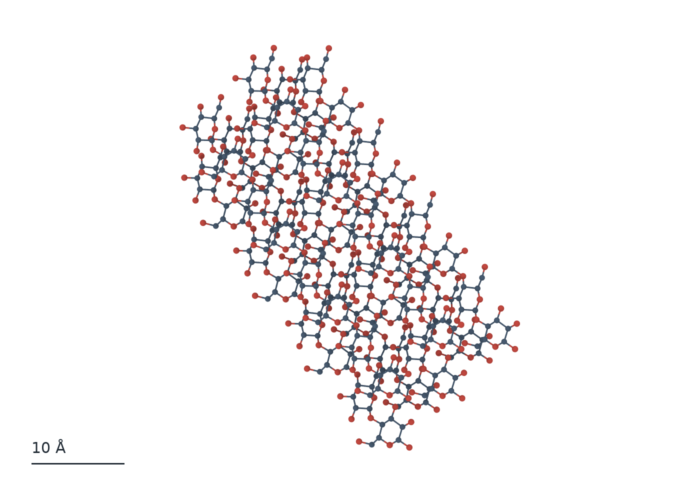
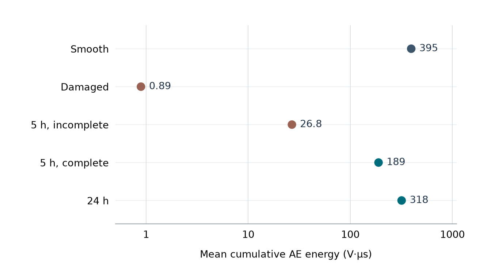

クラスレートハイドレート
水分子が作るかごにガス分子が入ると, クラスレートハイドレートと呼ばれる結晶ができます. ゲスト分子の振動, かごへの入りやすさ, 結晶が成長する過程を, 第一原理分子動力学や古典分子動力学で調べています. ガス分離・貯蔵や冷熱利用につながる研究です.
キーワード: 水素結合, ゲスト分子, ケージ占有率, 機械学習力場

水分子が作る結晶から道路トンネルの気流まで, 熱や流れに関わる現象を研究しています. 研究対象ごとに, 背景と研究の内容, 使う手法を紹介します.
水分子が作るかごにガス分子が入ると, クラスレートハイドレートと呼ばれる結晶ができます. ゲスト分子の振動, かごへの入りやすさ, 結晶が成長する過程を, 第一原理分子動力学や古典分子動力学で調べています. ガス分離・貯蔵や冷熱利用につながる研究です.
キーワード: 水素結合, ゲスト分子, ケージ占有率, 機械学習力場
結晶性高分子では, 折りたたまれた分子鎖が薄い結晶層を作ります. 粗視化分子動力学で, 冷却・加熱に伴う結晶化と融解, 層をまたぐ鎖の配置, 計算箱の大きさによる構造の違いを調べています. 成形条件と材料内部の構造を結び付ける研究です.
キーワード: ラメラ, 粗視化分子動力学, 局所秩序変数, 結晶化度
参考文献: Takano, Hiratsuka & Takahashi, Sci. Rep. 16, 15368 (2026)

バイオマスや廃プラスチックを加熱すると, 結合が切れ, 気体・液体の成分や炭化物が生じます. 反応分子動力学で結合の切断と生成を追い, 原料の分子構造と生成物の関係を調べています. 廃棄物の資源化に向けた反応過程の研究です. （工学院大学リサイクル工学研究室と共同研究）
キーワード: ReaxFF, セルロース, リグニン, チャー

固体表面に接する分子は, 表面の形や結合の状態によって向きや動きが変わります. 分子動力学や第一原理計算を用いて, 固体表面のぬれやナノ流路の輸送, グラフェン上のペプチド結晶のRamanスペクトルを調べています. 表面の構造と計測される物性を結び付ける研究です.
キーワード: ぬれ, 吸着, グラフェン, Ramanスペクトル
酸化によって生じる物質がき裂を埋め, 強度が回復するセラミックスを研究しています. 曲げ試験中の弾性波をアコースティックエミッション（AE）計測で捉え, 治癒の状態を評価します. 酸化生成物と母材の接合は第一原理計算で調べています. 高温で使う材料の健全性評価につながります.
キーワード: き裂, 酸化, アコースティックエミッション, 界面接合
参考文献: Yanaseko et al., Mater. Chem. Phys. 328, 129922 (2024)

球の回転や表面形状が変わると, 流れが表面からはがれる位置と後流が変わり, 抗力・揚力に影響します. 風洞での空気力計測, 粒子画像流速測定（PIV）, 高速度撮影, 数値流体解析を使って, 流れと飛翔の関係を調べています. （工学院大学スポーツ流体工学研究室と共同研究）
キーワード: 風洞, PIV, 抗力, マグナス力

ジェットファンの噴流は天井や側壁, 車両の影響を受けながらトンネル内の気流を作ります. 数値流体解析で流速分布と圧力損失を調べ, ファンの設置角や車両が換気に与える影響を評価しています. 限られた空間でファンの推力を換気に生かすための研究です.
キーワード: ジェットファン, 噴流, 縦流換気, 数値流体解析
液滴の蒸発では, 気液界面を通って分子が液体から気体に移ります. 分子シミュレーションで界面付近の分子運動を追跡し, 振動や電場が蒸発過程に与える影響を調べています. 液滴の乾燥や熱・物質移動の理解につながります.
キーワード: 気液界面, 蒸発, 分子動力学, 外部電場